FCC
one step closer into technological singularity

FCC
Five Cyber Community
FCC (Five Cyber Community) merupakan ekstrakulikuler bidang teknologi di SMAN 5 Bandung yang dibentuk untuk saling meluaskan ilmu dalam dunia komputerisasi dengan sistem belajar mengajar.
FCC mempelajari ilmu pemograman dan desain dengan tujuan menghasilkan karya yang berperan dalam masyarakat dan lingkungan. Maka anggota FCC dibagi menjadi dua divisi, yaitu divisi developer dan designer.
Divisions
Developer
Developer berperan dalam implementasi design menggunakan bahasa pemograman dan kreativitas untuk menghasilkan suatu produk yang dapat digunakan dan bermanfaat, seperti website dan game.
Designer
Designer bertugas untuk menciptakan konsep dasar, visual dan pengalaman agar suatu produk memiliki pandangan serta fungsi yang baik. Lebih spesifiknya UI/UX, design graphis, dan lainnya.